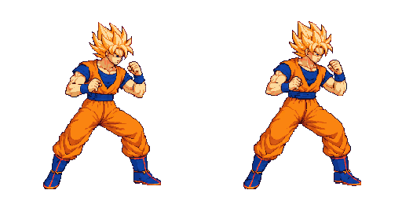
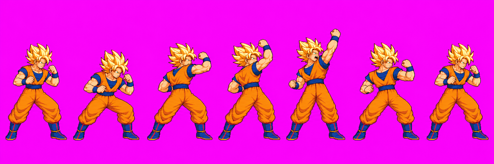
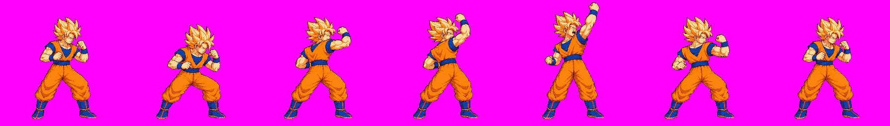
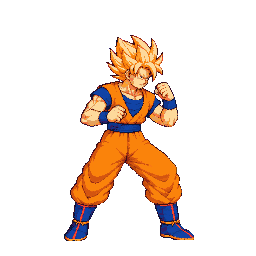
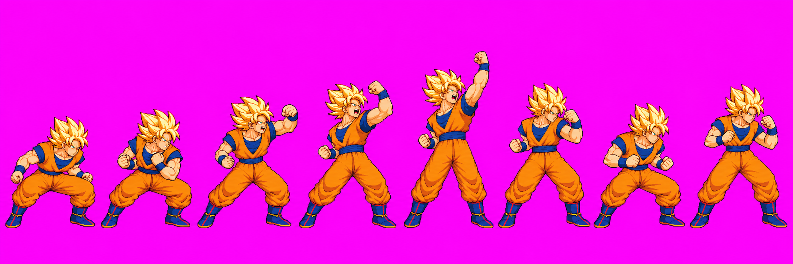
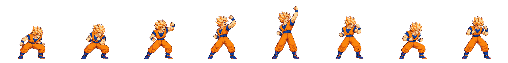
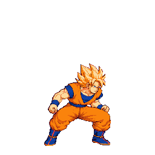
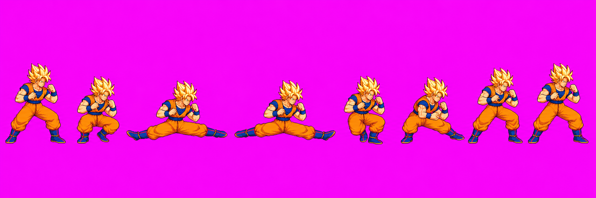
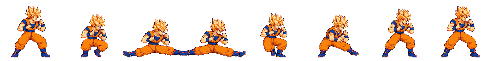
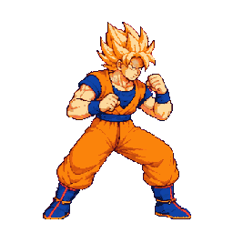

Goku directional normals — relay #44 candidates and #45 approval record
This page shows packed crops from exact 48-color whole-character diagnostic atlases, compared at one density with Goku's approved idle02. Relay #44's diagnostic manifest contains placeholder scale records solely to render Goku's manually probed head; those placeholders are not evidence and must not ship. Selected source attempts and other generated attempts remain preserved in raw/_qa_hold/.
Relay #45 decision recorded: the user approved uTilt v04 as drawn via Claude, imported at strip packScale 1.09 (“Approve, enlarge 9% (Recommended)”). Source pixels are unchanged. Astra's final5 technical scale/anatomy audit and version-bound fist-box check passed on the exact whole-character quantized atlas. Claude's runtime contact validation remains. uSmash v04 and dSmash v05 remain held; no new drawing round is authorized here.
Approved idle02 reference

uTilt v04 — phases [3,2,2], strip packScale 1.09
Attempt 2 of 2, unchanged drawing. The angled up-forward rising uppercut is present; active frames are f3 and f4. The user approved this drawing/import choice via Claude relay #45.
Astra final5: PASS for scale, anatomy and fit. All seven exact quantized frames were compared with idle02/light2. Representative collar-to-belt / belt / boot measurements are 39±5 / 35±4 / 40±4 px versus idle 38±5 / 36±4 / 44±4 px. Hidden knees are not numerically certified. Frame4's raised fist has 5px top margin. Active contact boxes were verified on the fist/wrist: f3 [146,25,26,25], f4 [157,2,29,33], with ±2–3px boundary uncertainty. This static art audit does not establish timed runtime combat contact. Full evidence: Astra relay #45 report.



uSmash v04 — phases [3,2,3]
Attempt 2 of 2. The active f3/f4 frames show the angled rising uppercut.
Astra: HOLD. Full silhouettes fit and overhead fists remain within the cell (minimum top margin 25px), but boot size and recovery proportions are small: recovery boot about 29–33px vs idle 44±4px; collar-to-belt about 34±5px vs 38±5px. Proposed strike boxes: f3 [152,59,25,23], f4 [158,23,22,24] (±2–4px extremity boundary).



dSmash v05 — phases [2,2,4]
Attempt 3 of 3, selected after the first v04 pack showed the wide sweep would not fit. Both active frames f2/f3 show the low split sweep with both legs extended.
Astra: HOLD. The active frames reach both sides but occupy x=0–255; outer boot pixels are cut off on both sides. No translation restores the missing pixels. Guard heads and upper-body volume also read larger than idle. Diagnostic-only foot boxes on surviving fragments: f2 left [0,211,55,30], right [211,207,45,30]; f3 left [0,210,48,26], right [207,211,49,30]. They do not cover complete feet and are not final contact data.



Technical evidence
Relay #44: full diagnostic atlas · anims.json · Astra audit. Its sheet SHA-256 is 483b083e04618147f6db1d94efab3d241b0f24553450e92f58bad172a80abac6; metadata SHA-256 6b08d31b1e31c91d96b5f396a8e795298f838da46691c9df7aeff9fe4526f0c2.

Relay #45 exact atlas: sheet 3e0db06b7d14daab5c1d6eeecde20f5ba992b99caf01d5f9517f08baa67aef98; metadata 9969677fd945ae986780cfb9493fd4dc5894ca3b6ab5756f4776ae8ed802fa58. Astra report: uTilt v04 final5 audit. Only uTilt v04 is user-approved from the relay #44 candidates. uSmash v04 and dSmash v05 remain held in raw/_qa_hold/ and on their stand-ins.
uTilt v04 drawing approval is recorded from Claude relay #45. Astra's static scale/anatomy and hitbox-location audit passed; Claude's runtime contact validation remains separate.